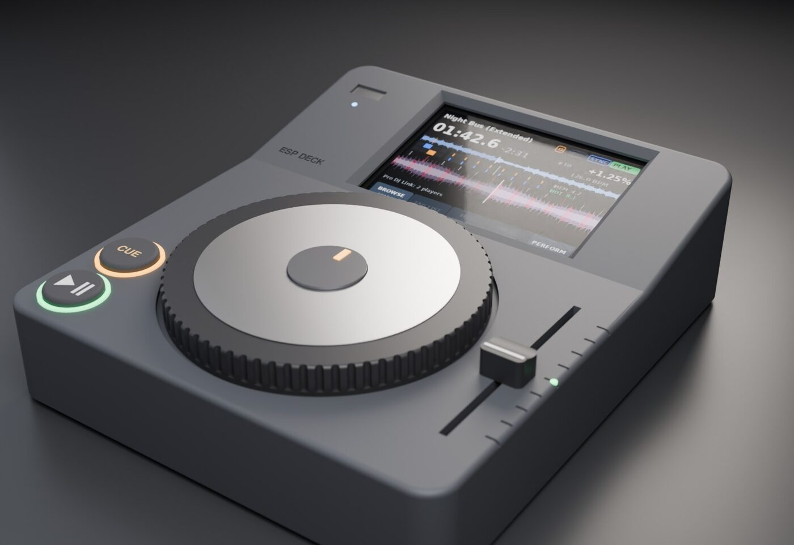
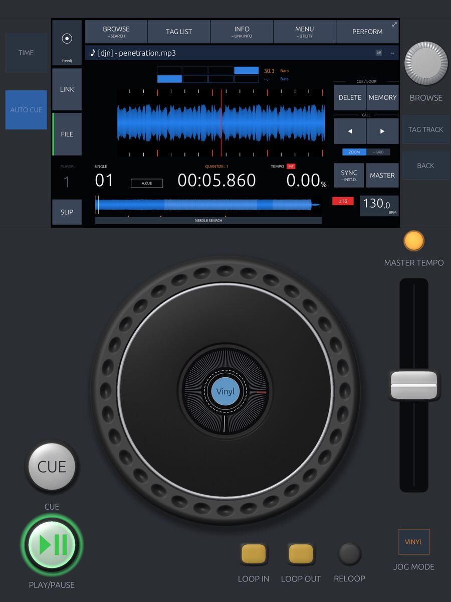

freedj is a family of open-source DJ decks: a software CDJ that runs on an iPad, a Raspberry Pi or a Linux desktop, and a 3D-printed hardware deck built on an ESP32-P4 microcontroller board. Both join a booth of Pioneer players over Pro DJ Link and beat-sync with them.

A small standalone deck. Plug in a rekordbox USB stick and play: no laptop. The firmware, the printed case and the jog platter are all open.
The first release will use only off-the-shelf parts: an ESP32-P4 dev kit, a 4" screen, an AS5600 sensor, two buttons and a slide pot. No custom circuit boards.
A clean-room deck in Rust: the screen, controls and behaviour of a modern media player. It takes a player number on a Pro DJ Link network, follows the tempo master or becomes it, and browses the other players' media.

Everything is public: firmware, app, CAD and build notes.
Off-the-shelf parts, a 3D printer and a weekend. Build guides are coming with the first hardware release.
Software under the GPL, hardware under CERN-OHL-S. Fork it, remix the case, map your own controller.
Progress is posted on the audiodestrukt blog and Instagram as it happens.